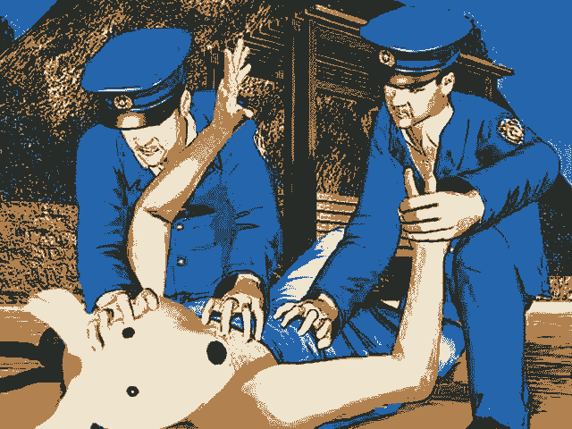

| 地デジカ「裸で何が悪い」 |
 |
| Download:4.9MB / Feel-BBS |
| Author:ＫＳＤ |
| Tool:RPG2000 |
| Message: ・あんま時間かかってなくてスマソ（笑） ・空気読まずに投下（笑） ・ペンタブほしい(´・ω・`)（笑） ・マウスで描いた（笑） ・人いない・・・（笑） ・携帯からでスマソ（笑） ・自分の絵ヘタすぎワロタ（笑） ・パソコンの調子が悪い（笑） ・眠い（笑） ・手が痛い（笑） ・飯食ってた、風呂入ってた（笑） ・普段の絵柄と違う（笑） ・○○年前の絵だが（笑） ・ラフの状態ですが（笑） ・まともに描き始めて○○ヶ月（笑） ・○○がおかしいです・・・（笑） ・俺配色センスなさすぎワロタ（笑） ・初ペンタブ（笑） ・雑だか投下してみる（笑） ・こうですか？分かりません＞＜（笑） ・最近描いてなかった（笑） ・○○描くの難しすぎ（笑） ・ごまかしまくってるのはご愛嬌なんだぜ（笑） ・久しぶりに描いたら時間かかりまくり・・・（笑） ・一発描き(笑) ・ググって出たデザイン丸パクリ（笑） |